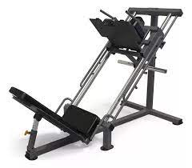

|
MAQUINA DE TRICEPS
- Con esta máquina usted puede trabajar los musculos triceps.
- Diseño compacto y cómodo.
- Cuenta con manubrios movibles.
- Ahorrador de espacio.
|
|
CINTA DE CORRER
- Amortiguación.
- Tamaño y superficie
- Consola y programas.
- Grado de inclinación máximo
| |
MAQUINA DE REMO
- Te ayuda a aumentar la fuerza en el core
- Te ayuda a aumentar la fuerza en los brazos
- Tipo de ejercicio aeróbico
|
|
MAQUINA DE ESCALERA
- Sirve para prevenir lesiones
- Los músculos del núcleo, los glúteos, el cuádriceps.
- El cuerpo emula la acción de subir escaleras.
|
 |
MAQUINA DE PRENSA PARA PIERNAS
- Consiste en un asiento con posición fija y un respaldo con una ligera inclinación.
- Los cuádriceps en la parte delantera de los muslos, los glúteos.
- Se basa en desarrollar la fuerza y resistencia.
- se basa en la formacion de cuadrisepas
|
|
MAQUINA DE EXTENSION DE PIERNAS
- Fortalecimiento muscular: Ayuda a fortalecer los músculos cuádriceps,
lo que puede mejorar la estabilidad de la rodilla y prevenir lesiones
- Desarrollo de fuerza: Al proporcionar resistencia ajustable, la máquina permite aumentar
gradualmente la carga para desarrollar fuerza en los músculos de las piernas
|
|
MAQUINA DE FLEXION DE PIERNAS
- Fortalecimiento de los isquiotibiales: La máquina de flexión de piernas permite aislar y trabajar
específicamente los músculos isquiotibiales, lo que puede ayudar a fortalecerlos de manera efectiva
- Prevención de lesiones: Fortalecer los isquiotibiales puede ayudar a prevenir lesiones
relacionadas con la parte baja de la espalda y las rodillas, ya que estos músculos .
|
|
MAQUINA DE POLEA ALTA
- Desarrollo de los músculos del brazo: Además de trabajar
|
|
MAQUINA DE POLEA BAJA
- Fortalecimiento de los músculos de la espalda:
Los ejercicios de tracción hacia arriba en una
máquina de polea baja son excelentes para fortalecer
los músculos de la espalda, especialmente los músculos
dorsales anchos, los trapecios y los romboides.
|
|
BANCO INCLINADO
- Entrenamiento del Pecho: Uno
de los usos más comunes
del banco inclinado
es para entrenar los músculos pectorales.
|
|
BANCO PLANO
- Press de Banca: El ejercicio
más común realizado en un banco
plano es el press de banca. Esta
variante del press de banca se
|
|
MAQUINA DE BICEPS
- Aislamiento del músculo
La máquina de bíceps
permite aislar el trabajo
en los músculos del bíceps,
|